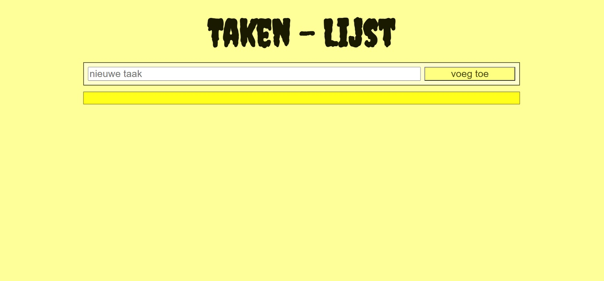
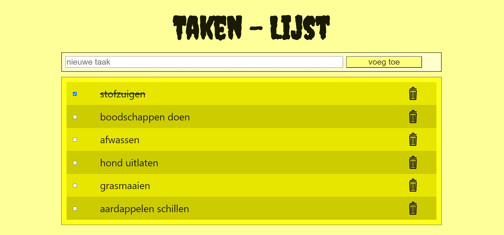

Omdat de ToDo-List opdracht werkt met een lokale server, kan er geen website van gemaakt worden met Netlify. Daarom hier wat screenshots.
Je begint met een lege takenlijst.
In de balk met "nieuwe taak" kan je een taak invoeren die je nog moet/wil gaan doen.
Als je dan op de knop "voeg toe" klikt, komt de nieuwe taak in je lijst met taken te staan. Voor de taak komt een vierkantje te staan, die je kan aanklikken. En achter de taak staat een vuilnisbak, die je ook aan kan klikken.
Als je meerere nieuwe taken hebt ingevoerd, ziet je takenlijst er dus bijvoorbeeld zo uit:
Als je een taak hebt gedaan, kan je die afvinken in het vierkantje voor de taak. De taak zal dan doorgestreept worden, zodat je duidelijk ziet dat je deze taak hebt afgerond.
Als je een taak later nog een keer wil of moet doen, kan je het vierkantje voor de taak weer uitvinken. De taak is dan niet meer doorgestreept, en je ziet zo dat deze taak nog gedaan moet worden.
Als je een taak toch even niet wil gaan doen, dan kan je die taak ook definitief verwijderen, door op de prullenbak achter de taak te klikken. In dit geval is de derde taak verwijderd.
Mocht je nou een verwijderde taak toch weer willen opnemen in je takenlijst, dan kan je die gewoon weer toevoegen bovenin. De taak komt dan niet terug als derde, maar wordt onder aan de lijst neergezet.
